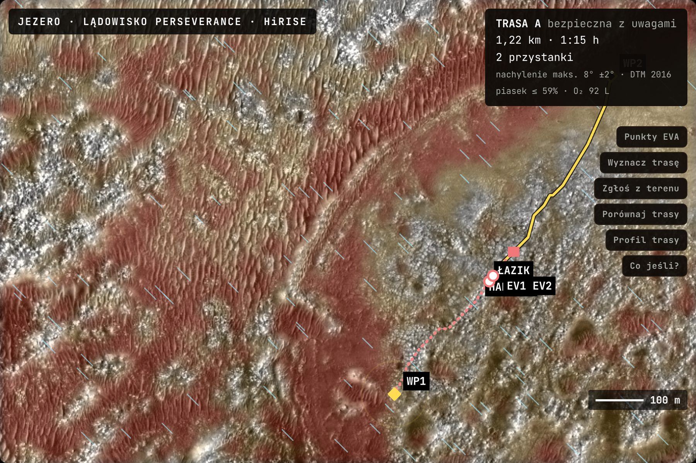
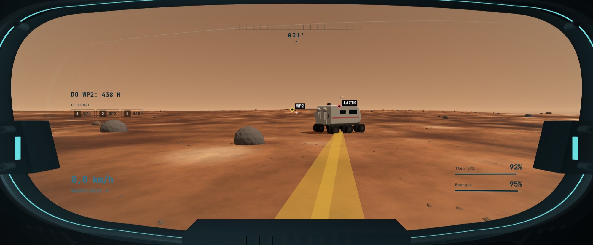
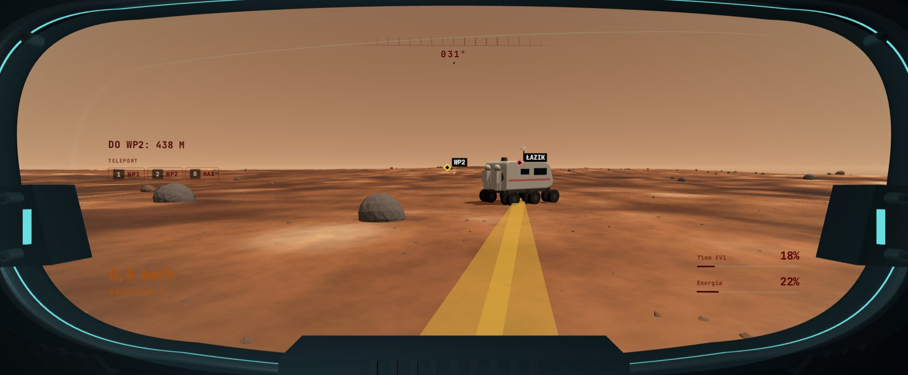
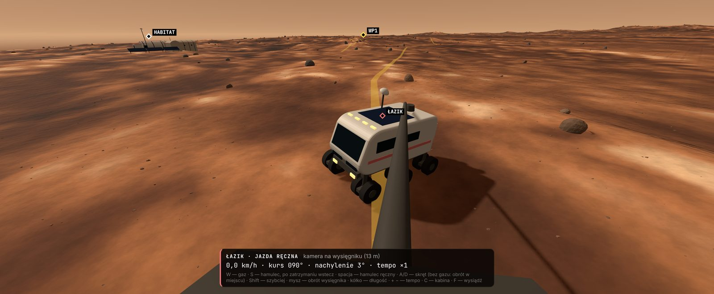
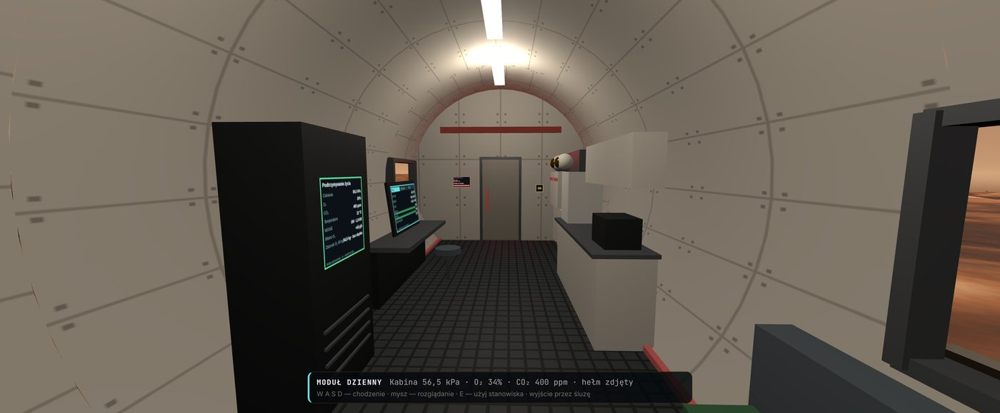
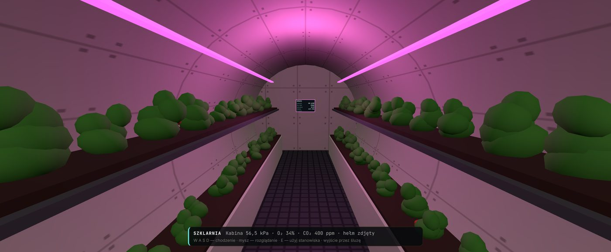

MarSim · planowanie wyjść EVA na Marsie
Mapa i planer wyjść na powierzchnię Marsa. Łączy dane pięciu instrumentów orbitalnych NASA z pogodą kosmiczną i prowadzi załogę od śluzy do celu i z powrotem.
Teren pokazu: krater Jezero, lądowisko łazika Perseverance
Środowisko pracy astronauty
Skład atmosfery przy powierzchni · spektrometr SAM, łazik Curiosity
Panel MarSim, sol 212, 10:11 LTST: grunt −43 °C · wiatr 7,2 m/s · pył τ 0,50 · 27 µSv/h
Wyzwanie NASA: Martian Map
Wyzwanie prosi o warstwową mapę z danych wielu misji NASA, która pomoże zaplanować wyjście: trasę i cele, bieżące warunki oraz naukę po drodze.
| HiRISEMars Reconnaissance Orbiter | 0,25 m · DTM 1 m | głazy od 1 m, nachylenie ±σ |
| CTXMars Reconnaissance Orbiter | 6 m | kontekst terenu |
| CRISMMars Reconnaissance Orbiter | 18 m | minerały, w tym oliwin |
| THEMISMars Odyssey | 100 m | bezwładność cieplna: luźny piasek |
| MOLAMars Global Surveyor | 463 m | kontrola wysokości DTM |
| DONKI · NOAA SWPCpogoda kosmiczna | na żywo | burze słoneczne, protony |
Bez uczenia maszynowego. Głazy z geometrii cieni, piasek z pięciu wskaźników fizycznych, każda warstwa z sumą SHA-256.
Planer trasy · krater Jezero, sol 212
Trasę wyznacza A* z modelem wysiłku Pandolfa dla 0,38 g. Zakaz: nachylenie z marginesem 2σ powyżej 25° i piasek powyżej 0,6. Głazy omijane o 6 m, schron w zasięgu 15 minut.

Zrzut z MarSim · warstwa zagrożeń, trasa A, łazik, habitat i załoga EV1–EV2
Wizjer hełmu
Dane skafandra liczy serwer misji. Wizjer pokazuje zawsze osobę w najgorszym stanie, bo załoga wraca razem.


Łazik ciśnieniowy i habitat
Wyjście zaczyna się przy skafandrach w habitacie. Łazik może dojechać do załogi jako schron i przekaźnik łączności.

Łazik · kamera na wysięgniku
Moduł dzienny
SzklarniaStan prac · wersja 1.4
Działa bez internetu. Stan wyjścia zapisuje co 5 sekund i wznawia go po awarii serwera. Każdy produkt danych ma sumę SHA-256.
Zanim astronauta wyjdzie ze śluzy, trasa jest już policzona.
Czworo mówców, siedem slajdów, ok. 7 minut i pokaz na żywo. Każdy kończy zdaniem, które przekazuje głos następnej osobie. Pełny tekst jest w notatkach (klawisz N).